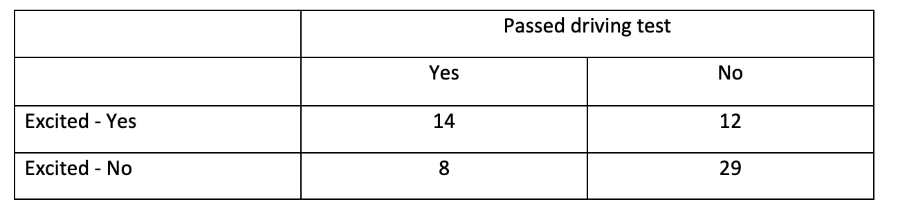
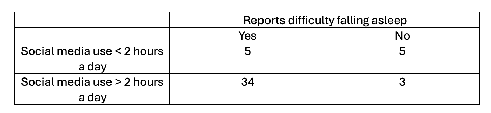

8. Binary logistic regression models
Amy Atkinson
Lecture
Part 1: This part covers why it is important to understand binary logistic regression, and why it is not appropriate to run a linear regression model when the outcome is binary It also covers an introduction to binary logistic regression.
Part 2: This part introduces the concept of odds and odds ratios, and provides an example of how to calculate odds ratios manually (to aid in understanding about what odds and odds ratios represents).
Part 3: This part covers the assumptions of binary logistic regression when you have one categorical predictor
Part 4: This part covers how to run a binary logistic regression model with one categorical predictor in R, and how to interpret the output
Download all the lecture slides here in both .pptx and .pdf format.
Lab preparation
Before the lab, please watch the following short video. This walks you through how to perform a binary logistic regression model in R.
If you want to have a play around with the script yourself, the R markdown script and dataset can be downloaded here.
Lab
Overview
Today I’ll provide you with one main research questions which will require you to complete the statistical test covered in the lecture. You can work in groups or individually.
You can write your script as a .R or Rmd file. Use the lab preparation video and script, lecture slides, and previous content covered in the statistics modules to help you.
The presentation given at the start of the lab can be downloaded here.
Datasets
The datasets for this lab can be downloaded here.
Main research Question
You are interested in whether the country an individual lives (UK/Australia) predicts reptile ownership (Yes/No). The dataset to use is “reptile_data.csv”
In the dataset, the outcome variable (reptile) is coded as “Y” and “N”:
- Y = Yes
- N = No
To make sure we should all end up with the same output, set UK as your reference category.
Optional extra dataset
I’ve also uploaded a second dataset (pen_colour.csv). If you finish the above analysis, you could have a go at performing a binary logistic regression model on tbis dataset as well. Alternatively, you could attempt this after the lab. The dataset (pen_colour.csv) can be downloaded using the link under the “Datasets” heading above.
Here, you are interested in whether pen colour (Black/Blue) predicts whether an individual passes their exam (Yes/No).
Set black as the reference category.
Hints and tips
Your script should aim to answer and interpret the research question above.
Start a new session on the server, then load in the required libraries (tidyverse, DescTools) and the dataset.
- Prepare our data for analysis
- Explore our data
- Run the binary logistic regression model
- Evaluate the model
- Evaluate the individual predictors
- Predicted probabilities
- Interpret the output
Model script
A model script showing one way of answering the reptile research question above using R will be available here from 9am on Monday of Week 19.
A model script showing one way of answering the (optional) pen research question will be available here from 9am on Monday of Week 19.
Feedback on student scripts
Here is feedback on the one valid student submission this week.
Independent learning activities
Below are some independent learning activities you can have a go at to help consolidate the content. These are optional, but recommended. Activity 1 is the WBA. Activities 2 and 3 are further activities to help you consolidate the content.
Activity 1: The WBA
The WBA can be accessed here from 27th February 2025. Each student gets three attempts. We recommend having a go at the WBA following the lecture and lab. We recommend saving at least one attempt for revision purposes close in time to the class test.
Activity 2: Calculating odds ratios manually
This activity will involve work with the following data. You are a researcher interested in whether being excited (yes/no) predicts whether an individual passes their driving test (yes/no). Here is a table of frequencies.
QUESTION 1: What are the odds of passing the driving test in the “Excited – Yes” group?
QUESTION 2: What are the odds of passing the driving test in the “Excited – No” group?
QUESTION 3: What is the odds ratio (where “Excited – No” is the original odds)?
QUESTION 4: What does this odds ratio mean?
QUESTION 5: Is there evidence of quasi-complete separation or complete separation here? Give a reason for your answer.
Activity 2 answers:
What are the odds of passing the driving test in the “Excited – Yes” group?
1.1666666668
How was this calculated?
Here is how this answers were computed:
The probability of individuals who are excited (Excited – Yes) passing the driving test:
14/26 = 0.5384615385
14 is the number of participants who were excited and passed the driving test.
26 is the total number of individuals who responded “Excited – Yes” (14+12)
The probability of individuals who are excited (Excited – Yes) not passing the driving test:
12/26 = 0.4615384615
12 is the number of participants who were excited and did not pass the driving test.
26 is the total number of individuals who responded “Excited – Yes” (14+12)
The odds of individuals who are excited passing the driving test:
0.5384615385 / 0.4615384615 = 1.1666666668
Answer = 1.1666666668
What are the odds of passing the driving test in the “Excited – No” group?
0.275862069
How was this calculated?
The probability of individuals who are not excited (Excited – No) passing the driving test:
8/37 = 0.216216216
8 is the number of participants who were not excited and passed the driving test.
37 is the total number of individuals who responded “Excited – No” (8+29)
The probability of individuals who are excited (Excited - No) not passing the driving test:
29/37 = 0.783783783
29 is the number of participants who were not excited and did not pass the driving test.
37 is the total number of individuals who responded “Excited – No” (8+29)
The odds of individuals who are not excited passing the driving test:
0.216216216 / 0.783783783 = 0.275862069
What is the odds ratio (where “Excited – No” is the original odds)?
4.23
How was this calculated?
1.1666666668 / 0.275862069 = 4.23
The odds ratio = 4.23
What does this odds ratio mean?
Individuals who were excited had a 4.23x higher odds of passing the driving test relative to individuals who were not excited.
Is there evidence of quasi-complete separation or complete separation here? Give a reason for your answer.
No – all cells have quite a few observations. There is no evidence of quasi-complete separation or complete separation.
Activity 3:
Activity 2 examines the following research question. You are a researcher interested in whether social media use (< 2 hours per day / > 2 hours per day) predicts whether an individual reports difficulty falling asleep (yes/no). Here is a table of frequencies:

You analyse this data in R and the output of your model is below. For the outcome, you set “0” as “Reports difficulty falling asleep - No” and “1” as “Reports difficulty falling asleep - Yes”.
Model output
Here is the model output:
Call:
glm(formula = sleep_numeric ~ Social_media_use, family = binomial(),
data = sleep_data)
Coefficients:
Estimate Std. Error z value
(Intercept) -0.000000000000002847 0.632455532033675660 0.00
Social_media_use> 2 hours 2.427748235947893019 0.873352682387679824 2.78
Pr(>|z|)
(Intercept) 1.00000
Social_media_use> 2 hours 0.00544 **
---
Signif. codes: 0 '***' 0.001 '**' 0.01 '*' 0.05 '.' 0.1 ' ' 1
(Dispersion parameter for binomial family taken to be 1)
Null deviance: 42.885 on 46 degrees of freedom
Residual deviance: 34.687 on 45 degrees of freedom
AIC: 38.687
Number of Fisher Scoring iterations: 5Evaluating the model output
You run some code to produce the model’s chi-square statistic, the degrees of freedom and the p-value. These are displayed below. Use this to answer the following question:
Chi square = 8.20 Degrees of freedom = 1 P-value = 0.004
QUESTION 1: What do these values indicate?
Evaluating Pseudo R2
Here are the Pseudo R2 values. Use this output to answer the following two questions:
McFadden McFaddenAdj CoxSnell Nagelkerke AldrichNelson
0.1911699 0.0978972 0.1600663 0.2674640 0.1485248
VeallZimmermann Efron McKelveyZavoina Tjur AIC
0.3113013 0.2081168 0.2308156 0.2081168 38.6866797
BIC logLik logLik0 G2
42.3869749 -17.3433399 -21.4425007 8.1983218 QUESTION 2: Which Pseudo R2 values might you report (based on the lecture)?
QUESTION 3: What are the value of these Pseudo R2s?
Evaluating the individual predictors
Look back at the summary output. Use this output to answer the following four questions:
QUESTION 4: What is the reference category for the predictor “Social media use”?
QUESTION 5: What does the Intercept Estimate represent?
QUESTION 6: What does the Social_media_use> 2 hours Estimate represent?
QUESTION 7: From the p-value in the summary table for the Social_media_use >2 hours row, what can you conclude?
Exponentiating the estimates:
Here are the exponentiated values. Use this output to answer the following three questions:
(Intercept) Social_media_use> 2 hours
1.00000 11.33333 QUESTION 8: What does the Intercept represent?
QUESTION 9: What does the Social_media_use> 2 hours value represent?
QUESTION 10: Can you interprert the Social_media_use> 2 hours value?
Confidence intervals:
Here are the confidence intervals. Use this output to answer the following question:
Waiting for profiling to be done... 2.5 % 97.5 %
(Intercept) 0.2781147 3.595639
Social_media_use> 2 hours 2.1576520 71.893706QUESTION 11: What does the Social_media_use >2 hours 95% confidence intervals represent?
Activity 3 answers:
QUESTION 1: What do these values indicate?
\(x^{2}\)(1) = 8.20, p = .004.
This indicates that adding the “Social media” variable to our model significantly improved the fit, compared to the null model containing intercept only
QUESTION 2: Which Pseudo R2 values might you report (based on the lecture)?
McFadden, CoxSnell and Nagelkerke
QUESTION 3: What are the value of these Pseudo R2s?
McFadden = 0.19, CoxSnell = 0.16, Nagelkerke = 0.27
QUESTION 4: What is the reference category for the predictor “Social media”?
< 2 hours is our reference category for the social media variable
*QUESTION 5: What does the Intercept Estimate represent?
The log odds of someone with a social media value of < 2 hours reporting difficulties falling asleep.
QUESTION 6: What does the Social_media_use> 2 hours Estimate represent?
The change in the log odds of having a difficulty falling asleep value of “Yes” when going from the reference category (social_media< 2 hours) to social_media> 2 hours
QUESTION 7: From the p-value in the summary table for the Social_media_use >2 hours row, what can you conclude?
Daily social media use (< 2 hours vs > 2 hours) significantly predicts whether an individual has difficulties falling asleep (yes/no; p = .005)
QUESTION 8: What does the Intercept represent?
The odds of reporting difficulties falling asleep for individuals who have social media use of < 2 hours a day.
QUESTION 9: What does the Social_media_use> 2 hours value represent?
The change in odds (i.e. the odds ratio) of reporting difficulties falling asleep (i.e. difficulties falling asleep = yes) when going from Social_media_use< 2 hours to Social_media_use> 2 hours
QUESTION 10: Can you interprert the Social_media_use> 2 hours value?
The odds of reporting difficulties falling asleep are 11.33x higher if your social media use is >2 hours a day than if your social media use is <2 hours a day.
QUESTION 11: What does the Social_media_use >2 hours 95% confidence intervals represent?
The 95% confidence around the odds ratio (for the comparison between Social_media_use < 2 hours to Social_media_use > 2 hours).
Asking questions
If you have any questions about this week’s content, please post them on the discussion board here. If you prefer to remain anonymous, you can post questions anonymously here. I will then copy your question to the discussion forum and answer it there and/or cover it in the next Q&A session.